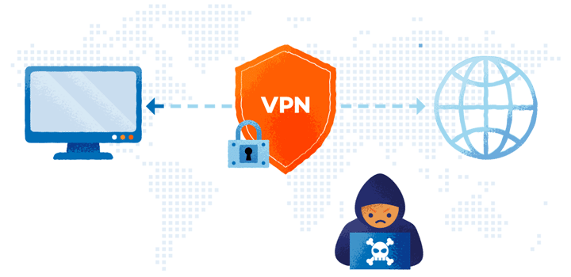

VPN Research Paper
What is a VPN, how does it work?
VPN’s work by rerouting connected internet device's data and information to go through a private service rather than the original user's regular internet service provider (ISP). Since the connection is being passed through another server this will conceal the user's IP address; this serves as a middleman between the device and ISP or internet. A user's device can access the internet while concealing their location, personal information and other data by using a VPN to create a private encrypted tunnel.
All network traffic is routed through a secure connection. This means that instead of data coming from the user's device, any and all data that is sent to the internet will then be routed by the VPN. Data is then sent from the user's devices to websites that have an encrypted connection with VPN created, once they connect to the internet. Once the website has responded the VPN then routes that request and sends the connection back.
When the user connects to the web using their VPN, their computer submits information to websites through the encrypted connection created by the VPN. The VPN then forwards that request and sends a response from the requested website back to the connection.
Encryption
Your data is encrypted when you connect via a VPN. This implies that the connection is encoded so that only parties with permissions can access and decode the data. Passwords, credit card numbers and other sensitive information are just a few examples of the kinds of information that encryption helps keep safe from hackers.
A virtual private network (VPN) hides your IP address so when your device is online, it gets its own unique ID. Because the IP address of the VPN server you are connected to is encrypted and replaces your real one. This will help you keep your privacy and anonymity when using the internet. In the end this complicates the tracking of your online activity and the identification of your devices and location by websites advertisers or other entities.
Access Geo-restricted Content
A feature Virtual private networks are known for is being able to access geographically restricted content. If an online service is only available in a specific country, connecting to a VPN server that's located in that country, will then be able to allow access to the content. Similarly, if your internet service provider (ISP) or government imposes restrictions on certain websites or services, a VPN can help you bypass those restrictions and access the content freely.
Safe Connections in public networks
When connecting to public networks such as those in coffee shops, airports, or hotels, your data is vulnerable to interception by hackers. With the use of a VPN it is much more difficult for hackers to access your personal information or monitor your online activities and devices.
VPNs can also allow peer-to-peer (P2P) connections and torrenting. This means that you can safely and securely share files and download content using P2P networks while connected to a VPN. Although we can torrent and have a P2P connection without a VPN, Some VPN providers like NordVPN, make it easier and safer to torrent and establish these connections. It's important to note that not all VPN providers allow or support P2P and torrenting.
Devices such as computers, phones, tablets and routers can all be configured with a virtual private network (VPN). The device will be encrypted after installation guaranteeing a secure connection for all internet traffic. Using a reliable VPN service that prioritizes security, privacy and performance is also crucial. Furthermore, remember that even though a VPN can improve your online security and privacy it cannot completely obscure your online activity and some organizations may still be able to track it down.
Types Of VPNs
Although VPNs provide us with a safer connection to the world wide web and mask our IP, there are some drawbacks with VPNs and VPN providers. For starters there are so many VPN providers, some you may have to pay and others are free. While in this day and age it's recommended to use a VPN for any online activity, it can be a hastel to pay for VPN subscriptions just for basic web use. There are plenty of free reliable VPNs like;
ProtonVPN
Free plan with unlimited bandwidth and no data caps. It has a strict no-logs policy and provides strong encryption for your online activities.
Windscribe
Is a free VPN plan with 10GB of monthly data. It has servers located in multiple countries and supports secure browsing.
TunnelBear
Offers a free plan with 500MB of data per month. It has a user-friendly interface and provides good security features.
Hotspot Shield
Provides limited features but provides access to its fast servers. It has a large user base and is known for its reliable performance.
Hide.me
Comes with a free plan with 2GB of data per month. It has servers in multiple locations and supports various security protocols.
While these VPN services offer free plans, they may have limitations compared to their paid counterparts. It's important to review their features and terms of service to ensure they meet your specific needs.
Drawbacks to some VPNs
Although these VPNs are free there are some things we have to be aware of whether or not they are a paid subscription or a free VPN we just installed. Free VPNs can have drawbacks and limitations that make them less favorable compared to paid services. Free VPNs can often offer limited features and functionalities compared to their paid counterparts. This can include restrictions on server locations, bandwidth caps, slower speeds, and fewer security protocols.
Some providers may log user data, such as browsing history, IP addresses, or personal information, and sell this data to third parties for advertising or other purposes. This compromises user privacy and anonymity, this ultimately does the opposite of what we want them to do as we want to increase our safety and privacy. These types of VPNs may lack robust security measures, leaving users vulnerable to data breaches, malware, or other cyber threats. Additionally, some free VPNs services may contain adware or spyware that can harm a users' device.
Free VPNs usually have overcrowded servers and limited resources, free VPNs often suffer from slow speeds, frequent disconnections, and inconsistent performance as these types of features are usually paid for. This can negatively impact the user experience, especially for tasks that require establishing stable and fast internet connections.
Many free VPNs impose bandwidth limitations, which can restrict the amount of data users can transfer. Again this would usually be a paid feature as bandwidth is something that can get expensive for the provider themself. This can be problematic for streaming, downloading large files, or engaging in other data-intensive activities.
A free VPNs may have restricted access to certain websites, services, or streaming platforms due to the limited number of servers a provider provides and or where these servers are located, not being able to provide a geo-unrestricted content. Users may encounter difficulties in bypassing censorship or accessing region-restricted content.
While free VPNs can be a convenient option for occasional use or basic security needs, it is essential for users to be aware of the potential risks and limitations associated with these services. For enhanced security, privacy, and performance, opting for a reputable paid VPN service is often recommended.
Reliable Subscription VPNs
ExpressVPN
Known for its fast speeds, strong security features, and large server network across many countries.
NordVPN (personal favorite)
Offers a vast server network, robust security protocols, and features like double VPN encryption for enhanced privacy.
CyberGhost
Provides user-friendly apps, strong encryption, and specialized servers for streaming and torrenting.
Surfshark
Known for its unlimited simultaneous connections, strong privacy features, and a clean interface.
VyprVPN
Offers proprietary technology like Chameleon protocol for bypassing restrictions, audited no-logs policy, and strong security features.
These paid VPN services typically offer more advanced features, faster speeds, better customer support, and higher levels of security and privacy compared to free VPNs. It's essential to choose a VPN service based on your specific needs and priorities, such as streaming, torrenting, or enhanced privacy protection.
Type of VPN Protocols
All VPN services use a type protocol, to establish users with the fastest and secure internet connection. These protocols use a combination of encryption and transmission standards to configure how data is transported between devices and the VPN server.
Point-to-Point Tunneling Protocol (PPTP)
Point-to-Point Tunneling Protocol (PPTP) is a networking technology that allows the secure transfer of data from a remote client to a private server over the internet
PPTP is one of the oldest protocols still active on the internet. Created by Microsoft, it uses the Transmission Control Protocol (TCP) control channel and Generic Routing Encapsulation (GRE) tunneling protocol. It relies on the Point-to-Point Protocol (PPP), which is a Layer 2 communications protocol directly between two routers, to implement security functionalities.
PPTP is fast and simple to deploy but only really applicable to people using older Windows operating systems. It also has several well-known security issues, so any VPN that only uses PPTP should be avoided.
PPTP also creates a secure tunnel between a client device and a server, enabling the secure transmission of data over an unsecured network like the internet. Its widely supported by most operating systems, including Windows, macOS, Linux, iOS, and Android, making it a popular choice for VPN (Virtual Private Network) connections. Its also known for its relatively fast connection speeds compared to other VPN protocols due to its simplicity and efficiency.
Despite its widespread use, PPTP has faced security vulnerabilities over the years, making it less secure compared to newer VPN protocols like OpenVPN and IPSec. PPTP is commonly used in scenarios where security requirements are not as stringent, such as accessing geo-restricted content, bypassing internet censorship, or establishing a basic level of privacy for internet browsing.
Overall, while PPTP is easy to set up and use, its security weaknesses have led many users and organizations to opt for more secure VPN protocols for sensitive data transmission.
Torrent
Torrenting refers to the process of downloading and sharing files through the use of the BitTorrent protocol. Torrenting operates on the BitTorrent protocol, which breaks down large files into small pieces. These pieces are then shared among multiple users (peers) simultaneously, making the download process faster and more efficient.
In a torrent network, Peer-to-Peer File Sharing allows users to both download and upload files to each other. This decentralized file-sharing system relies on the collective bandwidth and resources of all users involved in downloading or sharing a particular file.
When torrenting, users need a torrent client software such as uTorrent, BitTorrent, qBittorrent, or Vuze. These applications facilitate the downloading and sharing of torrent files.
Layer 2 Tunneling Protocol (L2TP)
This protocol combines PPTP with the Layer 2 Forwarding (L2F) tunneling protocol. It strengthens the data tunnel provided by PPTP but does not provide users with encryption or privacy capabilities. As a result, the protocol is typically bundled with a security protocol such as Internet Protocol security (IPsec).
Secure Socket Tunneling Protocol (SSTP)
SSTP is a VPN tunnel created by Microsoft and is a much more secure option. It transports PPP traffic through the secure sockets layer/transport layer security (SSL/TLS) channel, which provides encryption, key negotiation, and traffic integrity checking. As such, only the two parties that transmit the data are able to decode it. Using this over the TCP port 443 ensures that SSTP can travel through most firewalls and proxy servers.
Internet Key Exchange Version 2 (IKEv2)
IKEv2 handles request and response actions to ensure traffic is secure and authenticated, usually using IPsec. It establishes the security attributes of the device and server, then authenticates them, and agrees which encryption methods to use. It supports 256-bit encryption and allows the use of popular ciphers such as Advanced Encryption Standard (AES), Camellia, and ChaCha20. IKEv2 is mostly used to secure mobile devices, in which it is particularly effective.
OpenVPN
OpenVPN is an open-source VPN protocol that is widely used for creating secure point-to-point or site-to-site connections in routed or bridged configurations. It’s widely considered the best open-source VPN technology available. The free software uses pre-shared certificates, secret keys, and usernames and passwords to authenticate every device or server. OpenVPN is known for its strong security features and flexibility, making it a popular choice for VPN services and businesses. It uses a custom security protocol that utilizes SSL/TLS for key exchange and encryption, providing a high level of security. OpenVPN offers the same protection as established protocols but on a wider scale.
It supports both TCP and UDP transport protocols, allowing users to choose based on their specific needs for reliability or speed. OpenVPN is known for its stability and reliability, making it a preferred choice for businesses and organizations requiring secure communication channels.
Overall, OpenVPN is a robust and versatile VPN protocol that prioritizes security, flexibility, and ease of use, making it a popular choice for individuals and organizations looking to establish secure connections over the internet.
Return to top